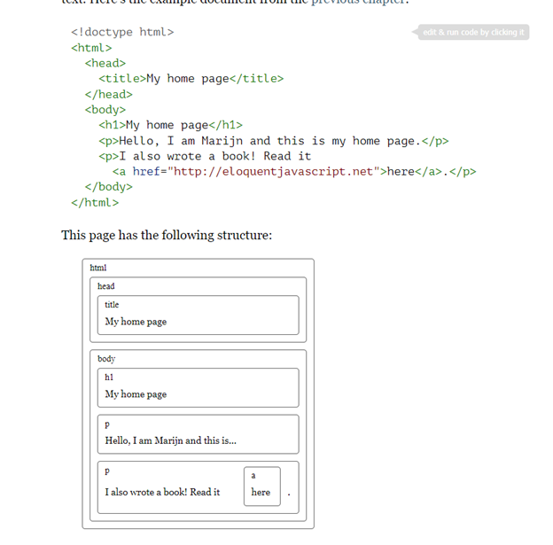

Week 2
Menu
Notes
What is the point of using arrow functions?
Don’t use: abstract, await, boolean, break, byte, case, catch, char, class, const, continue, debugger, default, delete, do, double, else, enum, export, extends, false, final, finally, float, for, function, goto, if, implements, import, in instanceof, int, interface, let, long, native, new, null, package, private, protected, public, return, short, static, super, switch, synchronized, this, throw, throws, transient, true, try, typeof, var, volatile, void, while, with, yield, undefined, NaN, Infinity
They are reserved
When naming variables: $name _answer firstName last_name address_line1
Are valid examples
A set can be converted into an array by placing the set, along with the spread operator directly inside an array literal.
A function that is passed as an argument to another function is known as a callback. function sing(song,callback) { if(typeof(callback) === 'function'){ callback();} function dance() { sing('Let It Go',dance);
How much can callback functions help with readability?
remember basic arithmetic rules for math
The && operator represents logical and. It is a binary operator, and its result is true only if both the values given to it are true.
The || operator denotes logical or. It produces true if either of the values given to it is true.
Structure
Team orginization has been a little rough. Going to try to implement live share.